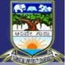
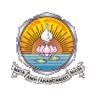
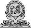

Universities
-
Bangalore University

Bangalore University was established in 1886 in Bangalore. This is one of the oldest public university in India located in Bangalore, Karnataka State, India. The university is spread over a vast land of 1111 acres.
Amrita University

Amrita Vishwa Vidyapeetham or Amrita University was established in 2003. The University has 5 campuses in Kerala at Amritapuri and Kochi, in Karnataka at Bangalore and Mysore, and in Tamil Nadu at Ettimadai.
... Karnatak University
Karnatak University was established in 1949. The university recognized by UGC Act & accredited by NAAC with "A" grade. It has 256 Affiliating Colleges.
The University has 43 PG Departments, 222 teachers
... Kuvempu University

Kuvempu University was established in 198. Kuvempu University recognized by UGC. It offers Bachelor's & Master courses in Arts, Science, Commerce, Education and Law. discipline.
Mangalore University

Mangalore University was established in 1980. The university recognized by UGC. & Accredited National Assessment and Accreditation Council (NAAC) with 4 Star level .
University of Mysore

University of Mysore was set up in 1916 by the act of Mysore Legislative Council. Mysore University now encompasses 122 affiliated colleges and 5 Constituent Colleges (with an aggregate of 53,000
The National Centre for Biological Sciences

National Centre for Biological Sciences -NCBS was set up in 1992 at Bangalore. NCBS is part of the Tata Institute of Fundamental Research. The institute awarded Deemed University status by UGC. It offers Ph.D & Researc...
National Institute of Mental Health and Neuro Sciences (NIMHANS)

National Institute of Mental Health and Neuro Sciences -NIMHANS was established in 1974 by Government of India. In 1994 the NIMHANS has been awarded a Deemed University status by the University Grants Commission (UGC).&nbs...
National Law School of India University - NLSIU

National Law School of India University - NLSIU was established in 1987. The NLSIU offers 5-year B.A., LL.B. (Hons.), LL.M, Masters Degree in Business Law and Postgraduate Diploma programs in Human Rights Law, Medical Law,...
Rajiv Gandhi University of Health Sciences

Rajiv Gandhi University of Health Sciences was established in 1996 by the government of Karnataka. The university affiliated 276 colleges.
RGUHS offers course in medicine, dentistry, pharmacy and nursing.
Visvesvaraya Technological University - VTU

Visvesvaraya Technological University was set up in 1998. It recognized under UGC act. It offers under graduate course in 27 disciplines and PG Programme in 66 disciplines of Engineering & Technology.
Jain University

Jain University formerly Sri Bhagawan Mahaveer Jain College is declared deemed to be University by the Ministry of Human Resource Development of the Union Government.
JSS University

The JSS University was founded in 1954. In the year 2008 Government of India provide the Deemed to be University status to JSS University. It is presently running more than 300 institutions starting from primary educatiON
Christ University

Christ University was estabalished in the year 1969 in Bangalore. It is spread over a vast land of 25 acres. It has the status of a Deemed university. The university has courses at under graduate as well as post graduate l...